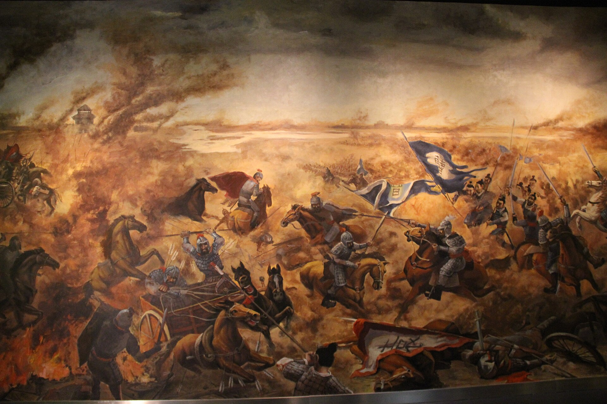

The Three Kingdoms period was an important time in Chinese history. Powerful leaders fought for control after the Han dynasty became weak. Many stories from this time show courage, loyalty, and strategy.
This period is still famous because of its battles and heroes. Leaders had to make difficult choices during war. These stories teach lessons about leadership, teamwork, and the cost of power.